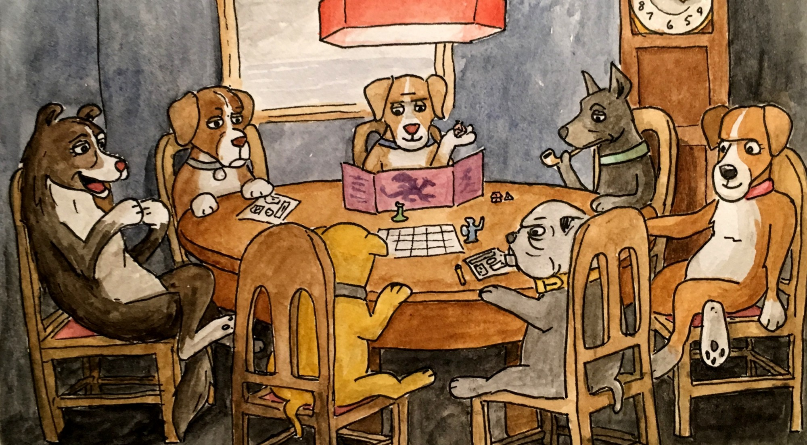
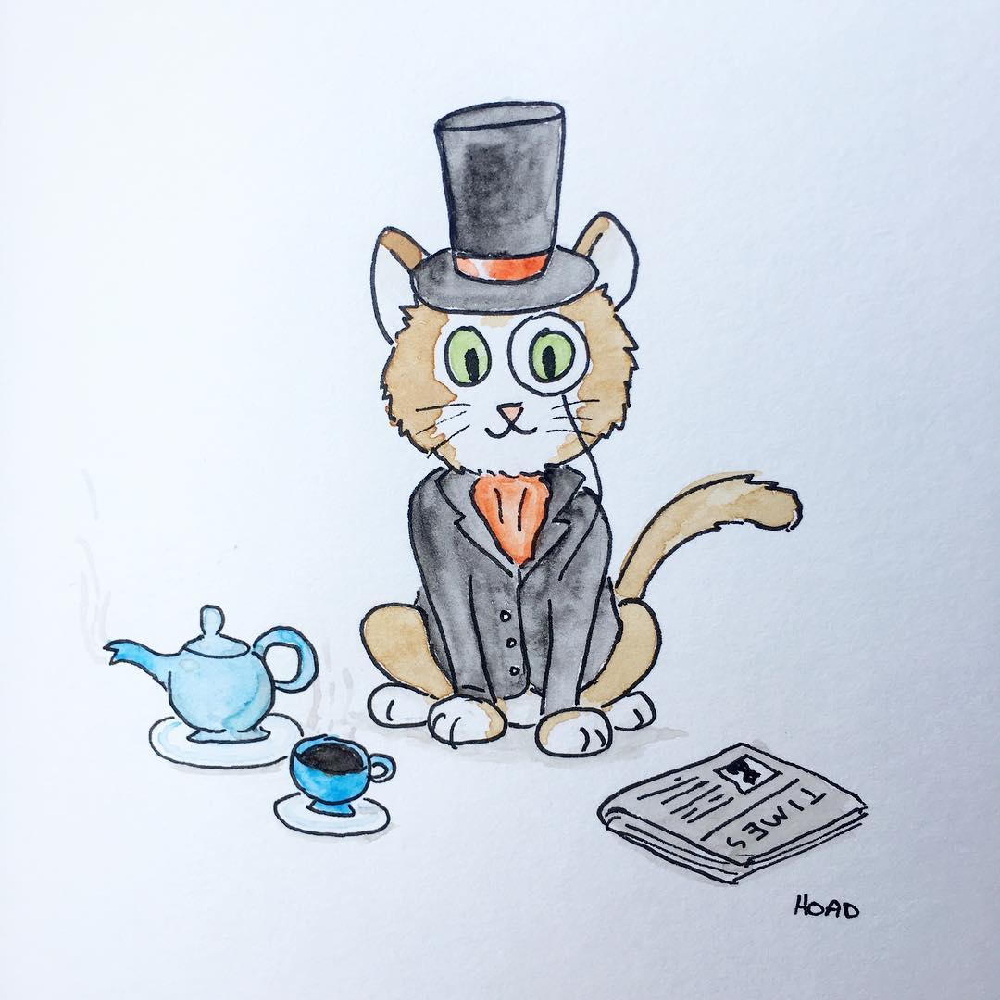
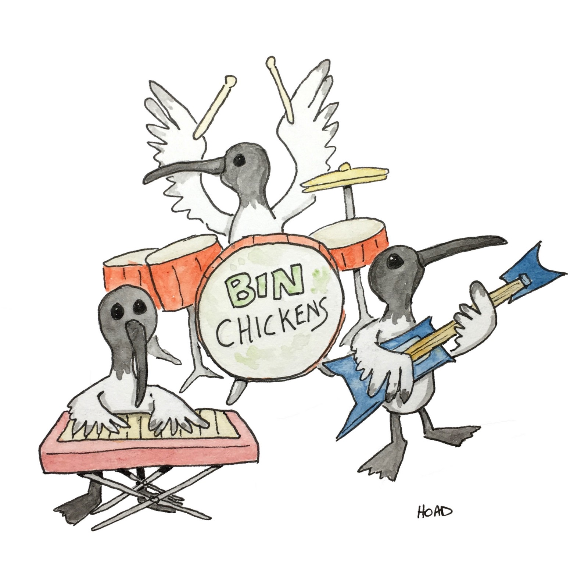

What I Iearned from completing a painting every day for a whole year

Day 324 - "Dogs playing Dungeons & Dragons
On January 1st, 2017 I decided to start one of those 'project365' challenges where you take a photo or create some piece of art every day for a sequential 365 days. Lilly Piri, my (now) fiancée, is an artist and gave me a set of watercolours for Christmas in 2016. At the time she was finishing up her own project365 and was the inspiration to put my new paint set to good use.

Day 1 - Off to a... start
I'd watched Lilly complete a number of paintings and had a bit of a play around with her watercolour set before so I wasn't going in completely unprepared. I don't really remember much about the first painting other than it probably took longer to do than I'd like to admit these days. To help with keeping myself accountable (and to timestamp each day) I decided to post each painting to my Instagram and to Facebook.
It's interesting for me to look back at this first painting and see all of the lining issues and painting mistakes. At the time I thought it was pretty good... which leads me to my first point:
You can't help but get better
If you exercise a muscle it will get stronger, right? It holds true for your creative muscle. Continuing that metaphor even further: you won't see gains on a day to day basis, only on a week to week or month to month basis.
It's hard to pin point a day where I felt like I suddenly 'got it' and everything made sense but I certainly felt a vague but substantial improvement in my own ability when looking back over hundreds of days. A number of my friends also told me that they could see the difference in ability across the life of the project.

Day 48 - The first of many ibis paintings.
It doesn't matter what you do each day, just that you do it
Early on I decided it was just a numbers game and I think that made the whole project less stressful. Instead of caring about what I was actually painting each day I would just focus on painting something. There are a few exceptions (Dogs playing Dungeons and Dragons being one) but most days the idea for the the painting popped into my head within five minutes of sitting down to paint.
"Where do your ideas come from?" is often quoted as the most common question asked of creatives. My response was usually "What ideas? I just paint random nonsense."
That said, sometimes that random nonsense came from playing Dungeons and Dragons… which brings me to my next point.
Playing Dungeons and Dragons is a good source of creative inspiration
Around 50 or so paintings were directly inspired by the events from the Dungeons and Dragons campaigns that I play with Lilly, Colin, Amanda, Gio, Kev, and Chris (who doesn't exist on the Internet).
Scenes from our adventures are just so much fun to draw. I feel like having taken inspiration from real life (if you can call it that) gave the paintings some personality and helped capture a kind of story in itself.
People love to watch you work
People are fascinated by the creative proces - I know I am. Recently, I was shown the GDC YouTube channel and have been obsessed with watching some of the greats talk about their process in game development. When you think about it, people just like a good story.

Day 11 - A self portrait
In November of 2017 I had a stall at the Brisbane Etsy Made Local markets where I was selling some of my art as A4 prints. In planning, I had hundreds of paintings to choose from but I settled on a few and would just lay them out on the table leaving a bit of room for me to do that day's painting.
What ended up happening was that people would stop and watch me paint. I noticed my stall was always busiest while I was painting. So I kept painting. And people kept coming to watch… and buying things. I guess the takeaway is that the process is sometimes as important to people as the finished result.
Doing something every day for a whole year is undoubtably challenging but it is definitely a great way to develop a skill. I would highly recommend it but I'd also repeat the advice from earlier:
"It doesn't matter what you do, just that you do it."
Good luck and have fun.